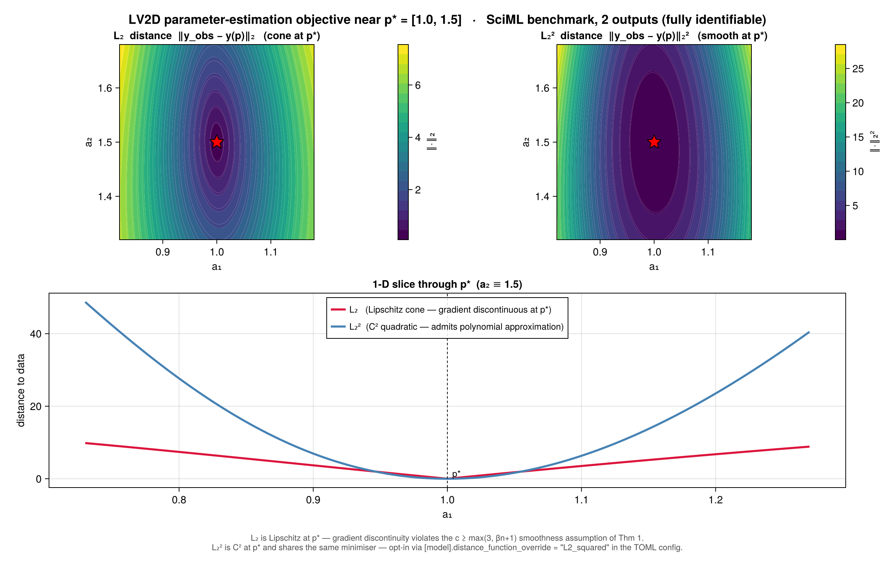

Dynamic_objectives Documentation
Dynamical system objective functions for global optimization and parameter estimation experiments.
The Problem
Parameter estimation in dynamical systems is fundamentally hard. Given observed time series data from an ODE system, how do you find the parameters that best explain the data? Standard optimization algorithms can get stuck in local minima, and the objective function landscape for ODE fitting is often highly multimodal.
The Approach
Dynamic_objectives provides 29 benchmark ODE models specifically designed for testing global optimization algorithms on parameter estimation tasks. Each model:
- Defines an ODE system — Using ModelingToolkit.jl for symbolic representation
- Generates synthetic data — Time series from true parameters with optional noise
- Creates objective functions — Returns error between simulated and reference trajectories
- Handles failures gracefully — Returns
Infon solver failures (optimization-friendly)
The result: a systematic way to benchmark parameter estimation algorithms across problems of varying difficulty.
Key Features
29 ODE Benchmark Models
| Difficulty | Models | Parameters |
|---|---|---|
| Easy | Lotka-Volterra 2D (v1, v2, v3, 2-output, SciML) | 2 params |
| Medium | LV 3D/4D, DAISY, FHN 2-out, Goodwin 3D, RMA, LV2D reparam | 3-4 params |
| Medium-Hard | LV 4D Constrained, Simple 1D, Coupled LV2D | 1-4 params |
| Hard | FHN, Goodwin 4D, Lorenz, Rossler, identifiability tests | 1-4 params |
| Very Hard | Generalized Lotka-Volterra 4D | 20 params |
See Model Catalog for complete details.
Robust Error Handling
- Returns
Infon failures — No exceptions during optimization - Timeout mechanism — Prevents ODE solver from stalling
- Multiple distance metrics — L1, L2, log-L2 norms
Flexible Data Generation
- Synthetic time series with configurable sampling
- Optional noise injection for robustness testing
- Full/partial observability — 1-4 measured outputs
Display Infrastructure
Pretty, readable output for models, parameters, and results:
display_model_summary(model)
display_parameters(param_names, values)
display_time_series(data)Installation
using Pkg
Pkg.add("Dynamic_objectives")Or, for development against a local checkout:
using Pkg
Pkg.develop(path="/path/to/DynamicObjectives")Or add to your Project.toml:
[deps]
DynamicObjectives = "a7860e71-583f-4874-99b9-9df52d7a8e5c"
[sources]
DynamicObjectives = {path = "../DynamicObjectives"}Quick Start
using DynamicObjectives
# 1. Define an ODE system
model, params, states, outputs = define_lotka_volterra_2D_model_v3()
# 2. Set up the parameter estimation problem
p_true = [1.0, 1.0]
ic = [1.0, 1.0]
time_interval = [0.0, 10.0]
numpoints = 25
# 3. Create objective function
error_func = make_error_distance(
model, outputs, ic, p_true, time_interval, numpoints,
L2_norm, first, nothing;
return_inf_on_error = true,
eval_timeout = 10.0
)
# 4. Test at true parameters
@assert error_func(p_true) < 1e-6 # Should be ~0Distance Metrics: L₂ vs L₂²
The choice of distance function shapes the parameter-estimation landscape near p_true. The default L2_norm is Lipschitz at the minimum (a cone, gradient-discontinuous); switching to L2_squared produces a C² quadratic basin at the same minimiser.

The 1-D slice (bottom) makes the distinction sharp: L2_norm is V-shaped at p*, while L2_squared is U-shaped. This matters for the polynomial-approximation guarantee in Globtim — Thm 1 requires c ≥ max(3, βn+1) continuous derivatives of the objective, which L2_norm violates at the minimum but L2_squared satisfies.
Opt in per experiment via the TOML config:
[model]
distance_function_override = "L2_squared"Available metrics: L2_norm (default), L2_squared, log_L2_norm. The figure above was regenerated with pkg/DynamicObjectives/examples/figures/l2_vs_l2squared.jl.
Contents
- Model Catalog — All 29 models with configurations and recommended testing sequences
- Glued Objectives — Higher-dim test problems with known CP sets via Cartesian-product gluing